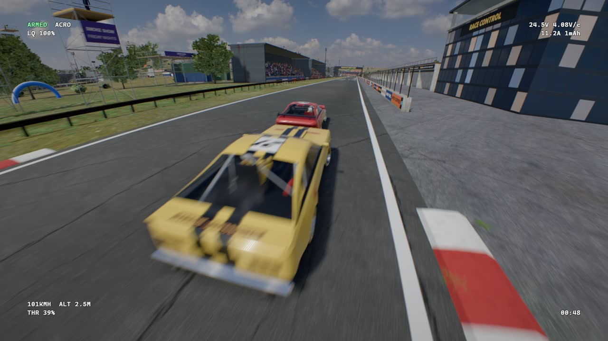
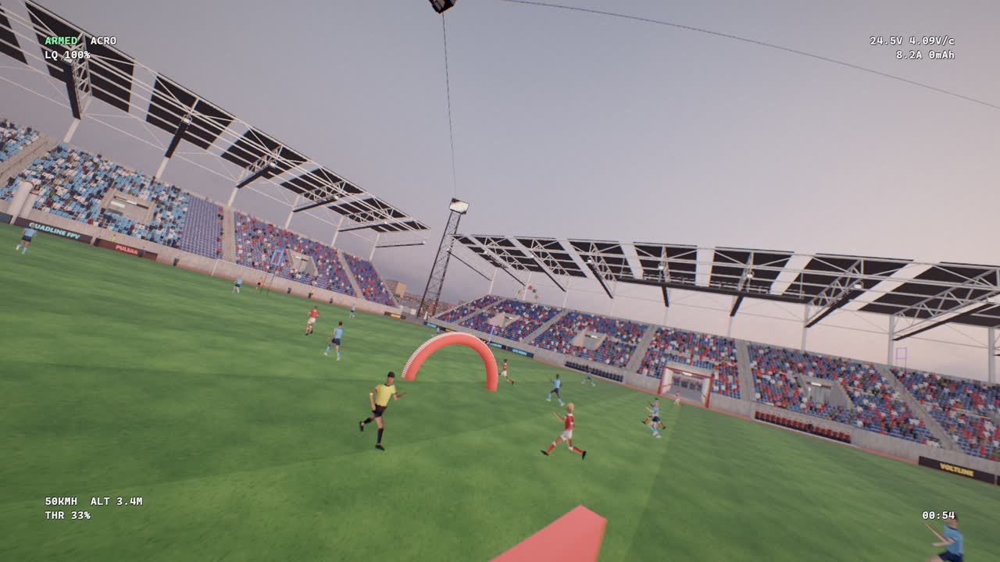
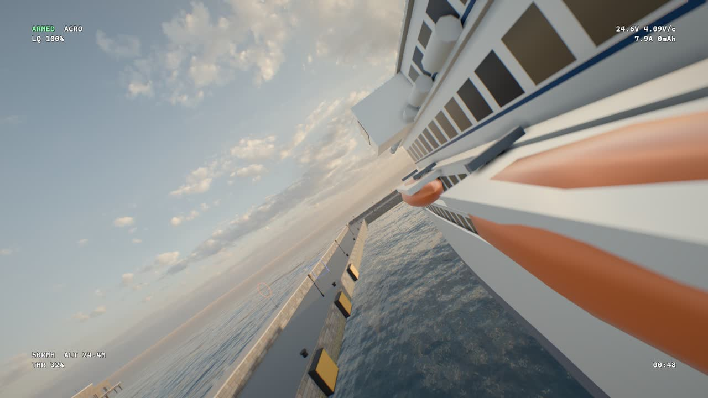
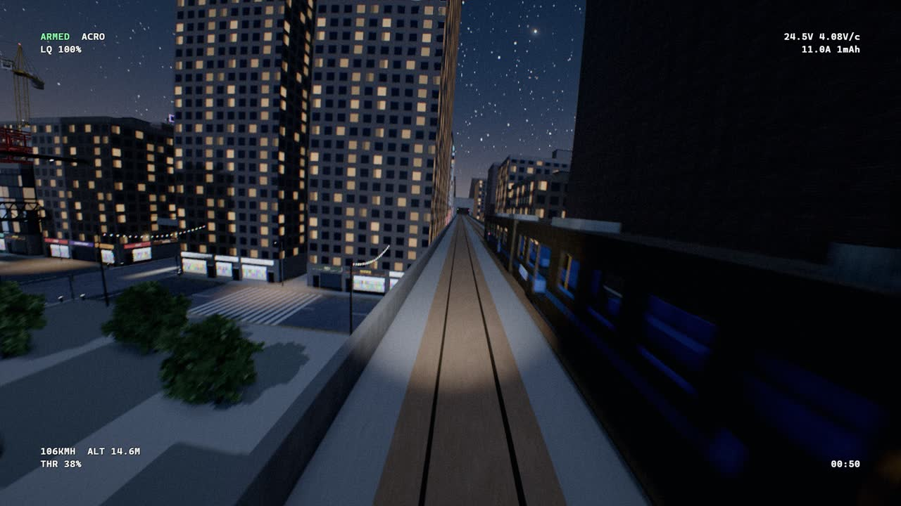
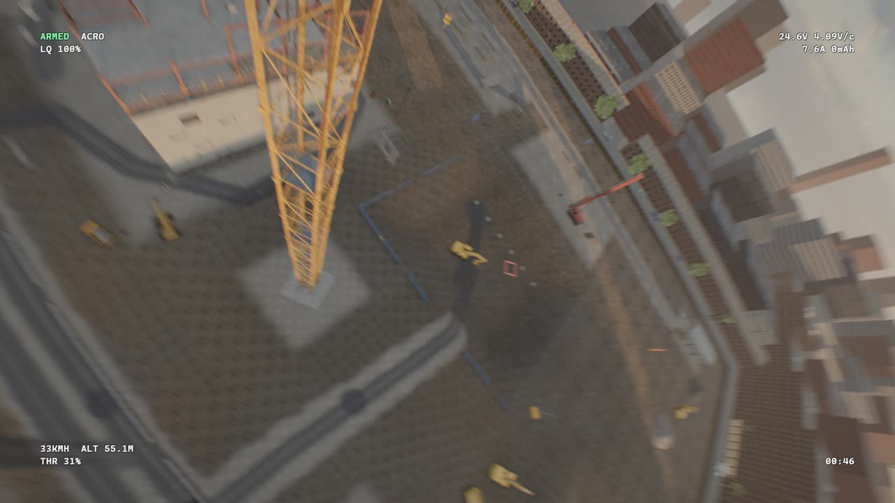
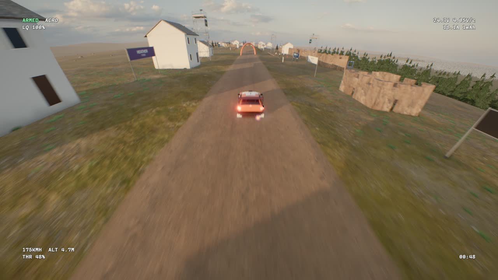
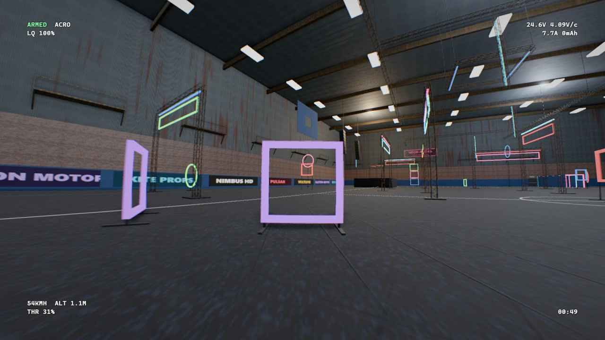
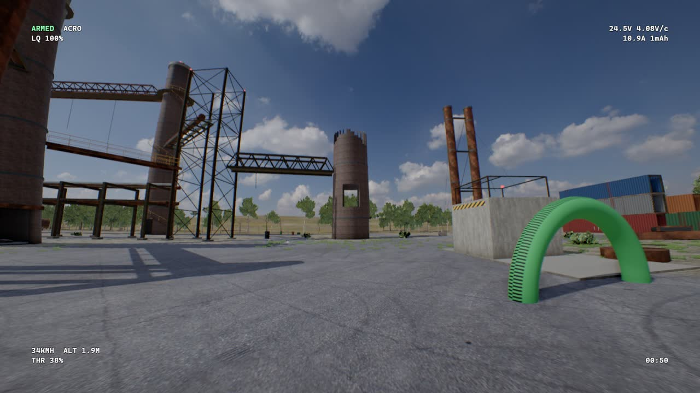

See it fly
Every clip is recorded in Quadline: the trains, ships, cars and the match are all running live in the map.
Built to feel like the real thing
Real flight physics
The quad is simulated a thousand times a second: motors, props, prop wash when you drop into your own air, ground effect and battery sag.
Fly with your own gear
Plug in a radio or a gamepad and set it up in a minute. Betaflight-style rates, PIDs and tunes, plus dozens of real frames, motors and props to build with.
Places that move
Traffic, trains you can fly through, airliners on take-off, skydivers, drift and rally cars, roller coasters and a football match.
Fly with friends
Multiplayer over Steam with a join code, or on the same Wi-Fi with LAN. Damage on or off, turtle mode included.
Any time of day
Morning, midday, golden hour, overcast, dusk or night under the city lights, with weather on top.
Record your best lines
One key saves a clip of what you just flew, ready to post.
Somewhere new every session
Packed with things to fly through, under and round: no long empty gaps between the good bits.








- Neon District
- Highrise Site
- Abandoned Factory
- Kingsport Docks
- Nightfall Airfield
- Hollowbrook Mall
- Hot Pursuit
- Redrock Quarry
- Ridgeway Drift Park
- Kingsbridge Grand Prix
- Red Hill MX
- Arena Supercross
- Glenmorrow Forest Stage
- Sierra Roja Sprint
- Velocity Indoor Karting
- Ashgrove Race Field
- Grand Couloir (wingsuits)
- Blue Ridge Drop Zone
- Seacliff Soaring
- Glenfell Low-Flying Valley
- Hohtal Valley
- Copper Gorge
- Willow Farm
- Open Plain
- Grand Stadium
- Wonderfield Festival
- Thunder Peak Park
- Neon Arena
- Westfield Sports Hall
- Maple Close
Up and flying in a minute
- Download
Tap Download for Windows. If your browser says the file isn't commonly downloaded, choose Keep.
- Open it
Run QuadlineFPV-Setup.exe. If Windows says "Windows protected your PC", click More info, then Run anyway. It shows that because the game isn't on a store yet.
- Fly
It installs in a few seconds, opens the game and puts Quadline FPV on your desktop. No admin password needed.
- Stay up to date
Nothing to do: every time the game starts it fetches the newest version by itself.
Playing together
Open Steam and log in first, then go to Multiplayer: one player hosts and shares the join code. Same Wi-Fi? Use Multiplayer → LAN and allow the firewall if Windows asks.
Your PC
| System | Windows 10 or 11, 64-bit |
| Download | 316 MB |
| Graphics | Runs on laptop graphics on Low; a gaming GPU for High and Ultra |
| Controls | Radio, gamepad, or keyboard and mouse |